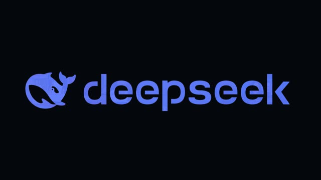
W000:08.3 to 0:09.8
Logo dive
The whoosh as the camera dives through the DeepSeek logo into the chat box. It is baked into the hook audio, so off fades the hook out just before it.
Every whoosh and swell in the v11 soundtrack, in film order. Each card plays that moment with and without the whoosh. The music is identical in both, only the whoosh changes. Everything starts on Keep: click the button to switch a card to Remove, then copy the prompt at the bottom and paste it back to me.

The whoosh as the camera dives through the DeepSeek logo into the chat box. It is baked into the hook audio, so off fades the hook out just before it.
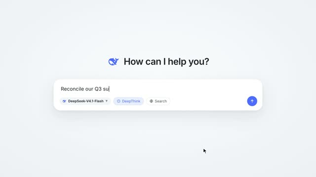
Air swell across the dissolve from the logo into the DeepSeek chat screen.
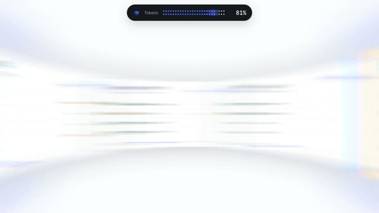
Rising noise sweep while the agent wall speeds up from Agent 4.
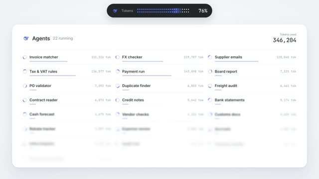
Falling swell after the impact as the 24-agent dashboard lands.
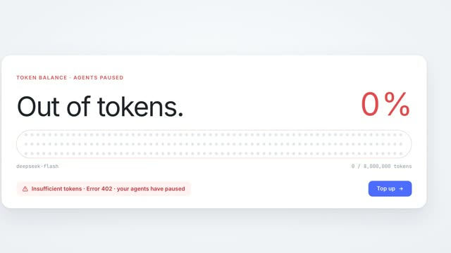
Short swell as the camera pushes onto the Top up button at 0%.
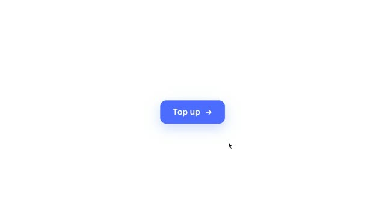
Swell building into the Top up click.
Swell from the click through the blue burst into the WorldFirst For Enterprise logo.
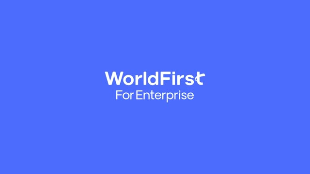
Swell as the logo clears and the currency roller opens.
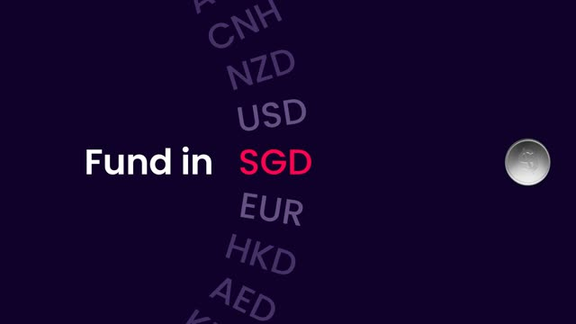
Left-to-right whoosh as the silver coin leaves SGD and travels across.
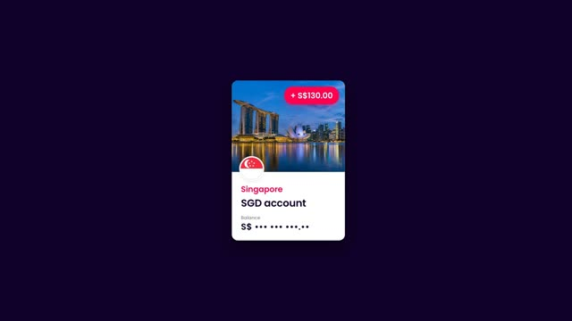
Swell into the white flash as the coin lands in the SGD account.
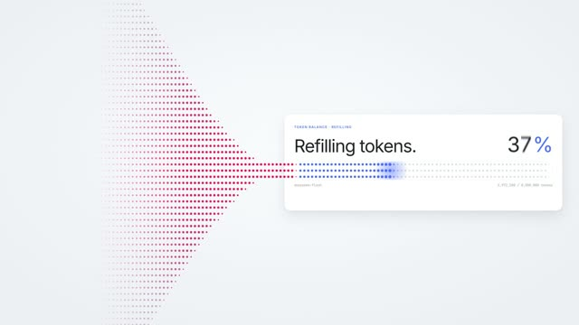
The long rising swell under Refilling tokens, 0% to 100%. The one you flagged first.
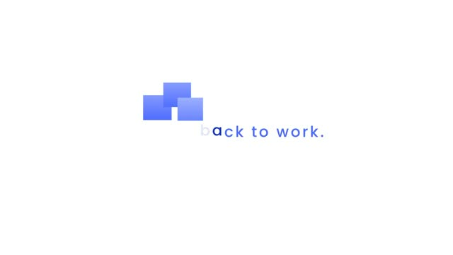
Two short swells as the letters turn into squares and the wave grows.
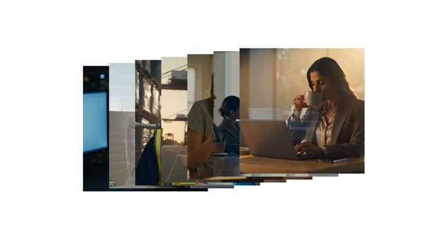
Swell as the footage stack shrinks into the cursor.
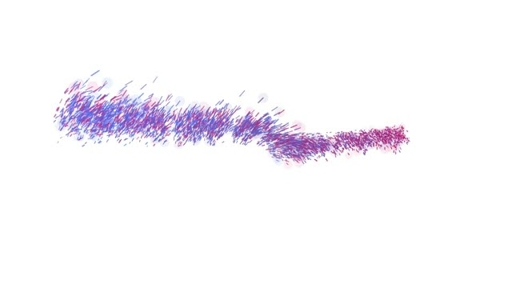
Swells as the line breaks into particles and flies into the lockup.